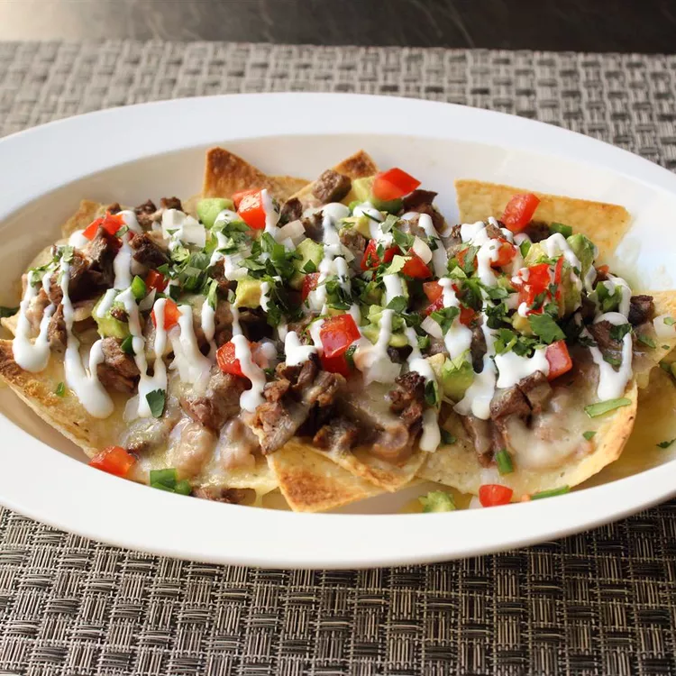

Super Deluxe Steak Nachos

These steak nachos are one of my all-time favorite party foods. For big games or special events, these nachos should get serious consideration for formulating your snack line-up. I recommend serving this with hot sauce on the side, and lots of beer.
Ingredients
Steak:
- 1 (1 1/2-pound) skirt steak or flap steak
- 1 teaspoon salt
- 1 teaspoon freshly ground black pepper
- ½ teaspoon ground dried chipotle pepper
- 1 tablespoon vegetable oil
Beans:
- 2 tablespoons bacon fat
- 1 yellow onion, diced
- 1 teaspoon salt, divided
- ½ teaspoon dried oregano
- 2 (15 ounce) cans pinto beans, rinsed and drained
- 1 ½ cups water or chicken broth, plus more as needed
Nachos:
- 1 (14 ounce) bag corn tortilla chips
- 12 ounces shredded Cheddar cheese
- 12 ounces shredded Monterey Jack cheese
- 2 ripe tomato, chopped, or more to taste
- avocado - peeled, pitted and diced
- ½ cup chopped white onion, or to taste
- 1 jalapeno pepper, seeded and minced
- ½ cup sour cream, for topping
- ½ cup chopped fresh cilantro
Directions
- Prepare the steak: Season both sides of steak with salt and peppers. Heat oil in a skillet over medium-high heat. Cook steak, turning occasionally, to medium doneness, about 6 minutes per side. An instant-read thermometer inserted into the center should read 135 to 140 degrees F (60 degrees C). Transfer meat to a bowl to let it rest.
- Pour a splash of water into the skillet; stir to scrape up browned bits and deglaze the pan. Pour this liquid over meat. Allow meat to cool completely.
- eat is completely cool, slice thickly (about 1/2 inch) with the grain, then cut into thinner strips. Dice by cutting into pieces against the grain. Transfer chopped steak back to the bowl; toss with the pan drippings.
- Make the beans: Melt bacon fat over medium heat in a pot. Add onion and a pinch of salt; cook and stir until softened, 5 to 6 minutes. Stir in oregano. Add pinto beans and water. Bring back to a simmer and cook until onions are soft, about 5 more minutes. Reduce heat to low.
- Mash beans with a potato masher to your desired consistency. Add additional liquid if necessary to achieve your preferred texture. Add the remaining salt to taste. Remove from heat.
- Preheat the oven to 450 degrees F (230 degrees C)
- Assemble nachos: Place tortilla chips about 2 or 3 deep in a heat-proof pan. (You may need more than one pan.) Top chips with spoonfuls of beans and a generous handful of steak pieces. Sprinkle with grated cheese.
- Bake in the preheated oven until cheese is melted and edges start to brown, about 10 minutes.
- Scatter tomato, avocado, onion, and jalapeño over the top. Drizzle nachos with sour cream and garnish with chopped cilantro.
Back to Top